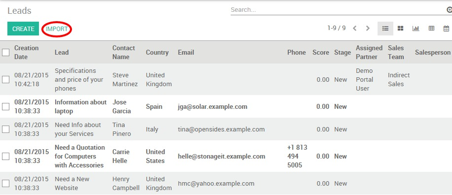
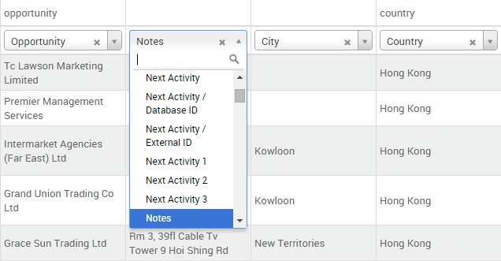

在YuanCloud CRM，您可以通过CSV文件导入潜在客户的数据库，例如陌生的电子邮件或陌生的电话拜访活动。你可能会想，如果最好的选择是导入你的联系情况作为线索或机会。这取决于你的业务特点和工作流程：
一些公司可能决定不使用线索，而是直接保持所有信息作为机会。对于一些公司，线索仅仅是在销售过程中的额外步骤。你可以称之为扩展(从开始线索)与简化的客户关系管理(从机会开始).
YuanCloud完全允许这些方法中的选择任何一个。如果你的公司处理从一个预先验证步骤的销售，如下面顺序描述首先激活线索阶段以便可以作为线索导入数据库。
激活线索阶段
默认情况下，线索阶段是不再YuanCloud里被激活的.如果你要导入你的联系做为线索而不是机会，如下所示去到 ，选择 使用线索如果... 并点击 应用 。

这种激活将创建一个新的子菜单：[UNKNOWN NODE title_reference])
导入 CSV 文件
在新的子菜单 ，点击 导入 并选择您的Excel文件，从 选择文件 按钮导入。确保它的扩展名是 .csv 文件，不要忘记设置正确的文件格式选项( 编码 和 分离器 )，以配合您的本地设置和正确显示你的列。
注解
如果您的潜在客户数据库是以另一种格式而非CSV提供的，你可以使用Microsoft Excel，OpenOffice/ LibreOffice，谷歌文档等很容易地将其转换为CSV格式。
选择记录以导入
如果你打勾*文件的第一行包含列的标签*的选项，从CSV文件中的列标题将自动映射到相应的字段。这使得导入更加容易，特别是当文件有很多列。当然，你可以重新映射列标题来描述你要导入的数据属性(姓，名，电子邮件等).
小技巧
如果你要导入你的联系作为机会而不是线索，确信增加*类型*列到你的CSV.这列用来表明你的导入是作为一个线索(类型=线索)还是作为一个机会(类型=机会)。
点击**验证**按钮，如果你要在导入前让YuanCloud校验一切看上去就可以了。除此以外，你可以直接按导入按钮：相同的验证也会被执行。
注解
其他关于如何导入联系情况到YuanCloud CRM的技术信息，可以阅读统一窗口中导入工具下的**常见问题**